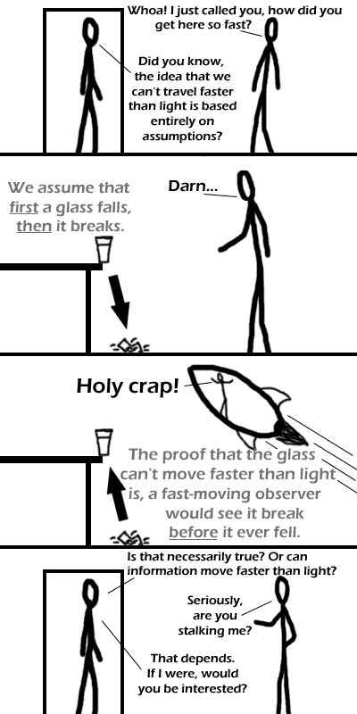

Comic JK 109
When I Feel Like It
⇤
<
?
>
⇥

⇤
<
?
>
⇥
Forum
.
RSS
.
Digg
.
Facebook
.
Reddit
.
Twitter
.
Stumbleupon
Depends on what you mean by interested. wat I love this relativity time-travel shit. Oh wow my hed hurts but i lol'd Information is an abstract concept - in itself, it is completely meaningless. However, how humans and animals and stuff -perceive- it is where the true power lies. Of course, if you expect any brain to process information faster than the speed of light, than you are sorely mistaken. > unless UN decreed to standardize length unit to lightyear and information unit to word. >Information isn't always meaningless in of itself... that's data you are thinking of there. Since the meaning is also information. I would think that if you travelled faster than light, you just wouldn't be able to see anything. > You'd be able to see past events. Speed of Light<Speed of Information<Speed of Bad news hooray for more h2g2 references! I often feel like I sense something sudden happening half a second before I actually see and hear it do so. Might just be how the brain works, though.... Demetrius: "Villain, what hast thou done?" Aaron: "That which thou canst not undo." Chiron: "Thou hast undone our mother." Aaron: "Villain, I have done your mother." Yes, I am